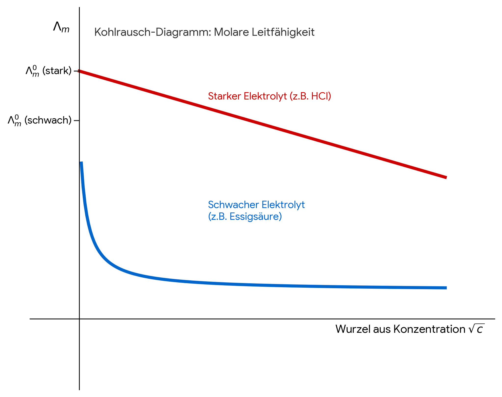

3. Elektrochemie
Hier entsteht deine Formelsammlung zu elektrochemischen Potenzialen, Ionenaktivitäten und Leitfähigkeiten.
Thermodynamik galvanischer Zellen
ΔRG = Wel,max = -z F ΔE ; (stromloser Zustand)
ΔRS = z F (∂ΔE/∂T)p
ΔRH = -z F [ ΔE - T (∂ΔE/∂T)p ]
ΔG0 = -z F ΔE0 = -RT ln Keq
- ΔE (Zellspannung/EMK) muss für eine freiwillig ablaufende Reaktion in einer galvanischen Zelle positiv sein.
- (∂ΔE / ∂T)p nennt man auch den Temperaturkoeffizienten der Zellspannung. Er zeigt direkt, ob sich die Zelle beim Entladen erwärmt oder abkühlt.
z: Ladungszahl
F: Faraday-Konstante ≈ 96.485 C/mol bzw. As/mol
Elektrochemische Membrangleichgewichte
Definition des Membranpotentials:
1. Nernst-Potential (für eine einzelne Ionensorte):
2. Goldman-Hodgkin-Katz-Gleichung (für mehrere Ionen):
Hinweis zur GHK-Gleichung: Diese Beziehung gewichtet die Außenkonzentrationen (o für outside) und Innenkonzentrationen (i für inside) der Ionen mit ihren jeweiligen Membran-Permeabilitäten (P). Da Chlorid-Ionen (Cl−) im Gegensatz zu Kalium und Natrium eine negative Ladung besitzen (z = -1), gehen ihre Konzentrationen mathematisch genau invertiert – also die Innenkonzentration im Zähler und die Außenkonzentration im Nenner – in den Logarithmus ein.
Leitfähigkeit von Elektrolytlösungen
κ = 1/ρ
κ = l / (R A)
κ = e (N+ |z+| u+ + N− |z−| u−)
C = l / A
κ = C / R = C G
R = ρ l / A
R = ρ C
Λm = κ / c
Λeq = κ / (z c) = Λm / z
Kohlrausches Quadratwurzelgesetz für starke Elektrolyten :
Λm = Λm0 - k √c
Λ0 = Λ0+ + Λ0−
Diagramm zum Kohlrauschen Quadratwurzelgesetz

κ(Salz) = κ(Lösung) - κ(Wasser)
κ = |z| c Λeq = c Λm (für starke Elektrolyte)
κ = cs (νA Λ0A,m + νB Λ0B,m) (schwerlösliche Salze)
κ = |z| α c Λ0eq (für schwache Elektrolyte)
Ostwaldsches Verdünnungsgesetz :
α = Λm / Λ0m = Λeq / Λ0eq
Überführungszahlen t :
t+ = ν+ · Λ+0 / Λ0 t− = ν− · Λ−0 / Λ0
t+ + t− = 1
G : Leitwert [S] od. [Ω-1]
κ : Spezifische Leitfähigkeit [Ω-1 cm-1] od. [S cm-1]
ρ : Spezifischer Widerstand [Ω cm]
l : Länge
A : Querschnitt
N : Ionenanzahldichte (Ionen pro Volumen)
e : Elementarladung (ca. 1,602 ⋅ 10-19 C)
z : Ladungszahl
u : elektrische Ionenbeweglichkeit [m2/Vs]
C : Zellkonstante [cm-1]
Λm : molare Leitfähigkeit [Ω-1 cm2 mol-1]
Λeq : Äquivalentleitfähigkeit [Ω-1 cm2 eq-1]
Λm0 : molare Grenzleitfähigkeit bei unendlicher Verdünnung [Ω-1 cm2 mol-1]
cS : Sättigungskonzentraton
α : Dissoziationsgrad
Das Gesetz der unabhängigen Ionenwanderung
(Ermittlung der Grenzleitfähigkeit schwacher Elektrolyte)
Da schwache Elektrolyte unvollständig dissoziieren, versagt die grafische Extrapolation im Kohlrausch-Diagramm. Das Gesetz der unabhängigen Ionenwanderung besagt, dass sich die Gesamtleitfähigkeit bei unendlicher Verdünnung (c → 0) additiv aus den Grenzwerten der einzelnen Ionen zusammensetzt:
Baukasten-Methode:
Man kombiniert die Grenzleitfähigkeiten dreier starker Elektrolyte, um die gewünschten Ionen rechnerisch zu isolieren:
Klassische Anwendungsbeispiele:
-
Essigsäure (HAc):
Λm0(HAc) = Λm0(HCl) + Λm0(NaAc) - Λm0(NaCl) -
Ammoniakwasser (NH4OH):
Λm0(NH4OH) = Λm0(NH4Cl) + Λm0(NaOH) - Λm0(NaCl) -
Ameisensäure (HCOOH):
Λm0(HCOOH) = Λm0(HCl) + Λm0(HCOONa) - Λm0(NaCl) -
Kohlensäure (H2CO3, 1. Stufe):
Λm0(H2CO3) = Λm0(HCl) + Λm0(NaHCO3) - Λm0(NaCl)
Fazit: Durch den Abzug des starken Neutralsalzes (hier meist NaCl) kürzen sich die störenden Gegenionen mathematisch weg.
Verknüpfung von Halbzellenpotenzialen
Berechnung von Potenzialen (Luther'sche Regel & Bruttoreaktionen)
OM + x e− ⇌ RM
Bsp. 1) Intermediäres Potential (Luther'sche Regel):
Cu2+ + 2e− → Cu ; 2 E1; Reduktion
Cu+ + e− ← Cu ; E2; Oxidation (formale Rückreaktion)
−−−−−−−−−−−−−−−−−−−−−−−−−−−−−−−−−−−−−−−−−−−−−
Cu2+ + e− → Cu+; 2 · E1 − E2 1
Bsp. 2) Gesamtzellpotenzial (Bruttoreaktion):
Cu2+ + 2e− → Cu ; 2 E1; Reduktion
2 Na+ + 2e− ← 2 Na ; 2 E2; Oxidation (formale Rückreaktion)
−−−−−−−−−−−−−−−−−−−−−−−−−−−−−−−−−−−−−−−−−−−−−
Cu2+ + 2 Na → Cu + 2 Na+; 2 · E1 − 2 · E2 2 = E1 − E2
Legende:
• OM = Oxidationsmittel | RM = Reduktionsmittel
• Hinweis: In Bsp. 1 entsteht eine neue Halbzelle mit geänderter Elektronenzahl (z3 = 1). In Bsp. 2 entsteht eine klassische galvanische Gesamtreaktion ohne freie Elektronen. Da die Anzahl der ausgetauschten Elektronen hier für beide Teilschritte identisch ist (z = 2), entspricht das Gesamtzellpotential der direkten Differenz (E1 − E2).
Die Nernst-Gleichung
E = E0 + R · T z · F · ln Q
2. Praktische Form bei Raumtemperatur (T = 298,15 K / 25 °C):
E = E0 + 0,0591 V z · lg ( a(Ox) a(Red) )
Legende:
• E = Reales Potenzial der Elektrode / Halbzelle [V]
• E0 = Standardpotenzial (Tabellenwert bei Standardaktivitäten) [V]
• R = Universelle Gaskonstante (8,314 J · mol−1 · K−1)
• T = Absolute Temperatur [K]
• z = Ladungszahl (Anzahl ausgetauschter Elektronen)
• F = Faraday-Konstante (96.485 C · mol−1)
• Q = Reaktionsquotient (Verhältnis der Aktivitäten von Produkten zu Edukten)
• a(Ox) / a(Red) = Thermodynamische Aktivitäten der oxidierten und reduzierten Form
• ln / lg = natürlicher Logarithmus (Basis e) / dekadischer Logarithmus (Basis 10)
• Hinweis zum Vorzeichen: + lg(a(Ox)/a(Red)) ist exakt identisch mit − lg(a(Red)/a(Ox)).
Die Elektrolyse
Uz = Eeq,Anode - Eeq,Kathode : Zersetzungsspannung
Uz,eff = Uz + ηA + |ηK| : effektive Zersetzungsspannung
UKlemm = Uz,eff + I · RZelle : Klemmenspannung
Wirkungsgrad η galvanisches Element
ηth = maximale elektr. Arbeit / Reaktionsenthalpie
ηth = -nFE / ΔH
ηth = ΔG / ΔH = 1 - (T ΔS / ΔH)
ηth < 1 → TΔS < 0 → in der Zelle als Wärme frei
ηth > 1 → TΔS > 0 → Wärme aus der Umgebung aufgenommen
Debye-Hückel-Gleichung
f(±) = ( fAm · fBn )1/(m+n)
I = (1/2) · Σ cizi2
| f± | mittlerer Aktivitätskoeffizient |
| fA, fB | individuelle Aktivitätskoeffizienten der Kationen (A) und Anionen (B) |
| I | Ionenstärke |
| ci | Konzentration der Ionensorte i |
| z | Ladungszahl (Wertigkeit) der Ionen |
| m, n | stöchiometrische Koeffizienten des Elektrolyts AmBn |
| A | Debye-Hückel-Konstante ≈ 0,5092 l1/2 · mol−1/2 bei 25 °C (gilt streng nur bei I ≤ 0,01 mol/l) |